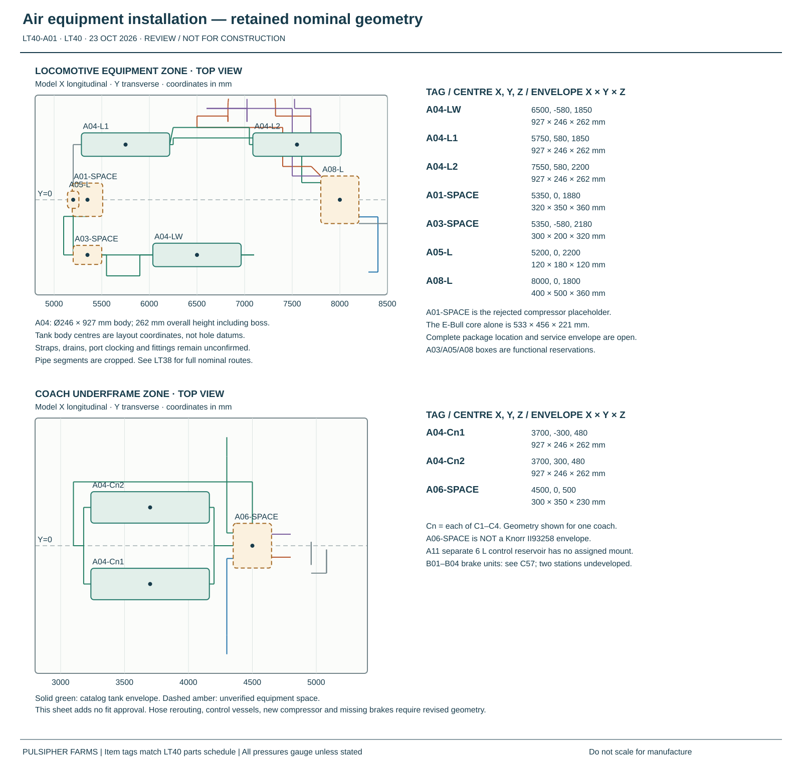

CURRENT POWER / MOVEMENT REVIEW · LT42
Full power budget, revised brake routes and combined movement findings → Coach HVAC exposes a power shortfall. Brake ratings, configured controls, generator drive and hose twist remain open.
LT40 · PARTS + COORDINATED REVIEW DRAWINGS · 23 OCTOBER 2026
One brake schedule. Three coordinated sheets.
The coach rotor, caliper, pad and 20/24 chamber family now has one quantity schedule. The installation and circuit sheets use the same item tags, with a named automatic-valve reference and explicit unresolved interfaces.
Supplier-review package, not a released build. The matched coach family is documented; the complete train brake system is not yet matched or approved. New valve/control tanks and the compressor package are not installed in 3D. Existing LT38 geometry and movement results are retained.
Coordinated drawings
A01 projects retained equipment locations. C01 shows the full train’s intended air connections. C02 identifies the coach module’s functional ports and pressure mismatch. Use the full-size view or zoom to read dimensions.


Retained nominal coordinates in millimetres; unverified equipment spaces are dashed. Do not scale for manufacture.
Parts schedule
Quantity basis: one locomotive and four coaches (three regular, one accessible). Coach caliper/chamber hands remain unassigned. The four locomotive brakes are an air-budget assumption with hardware still unselected. Availability checked 23 October 2026 and unconfirmed.
| Tag | Item / reference | Train quantity | Match and release status | Availability | Evidence |
|---|---|---|---|---|---|
| B01 | 325 mm rotor kit Hendrickson S-33391 | 164 per coach × 4 coaches | Catalog family matchedControlled rotor section and custom hub interface; existing Webb geometry is not confirmed S-33391 geometry. | [price removed]Listing in stock; earliest displayed Oct 27. Stock for 16 and destination delivery unconfirmed. | Hendrickson L949 Rev T, pp11–13,15,28 · FinditParts S-33391 listing |
| B02 | Caliper with mounting hardware S-39094-L / R; WABCO 40175072 / 40175073 | 164 per coach; hand split TBD | Catalog family matchedAssign hands by station, carrier orientation, wear clearance and bolt engagement; no assumed 8/8 split. | Not quotedQuote required | Hendrickson L949 Rev T, pp11–13,15,28 |
| B03 | WABCO 232 pad kit Hendrickson S-41159-1 | 84 pads/kit = 2 brakes; 2 kits/coach | Catalog family matchedConfirm complete application schedule and thermal duty. | [price removed]Special order; estimated 10–14 days before shipping. Quantity 8 lead time unconfirmed. | Hendrickson L949 Rev T, pp11–13,15,28 · AnythingTruck S-41159-1 listing |
| B04 | 20/24 spring/service chamber WABCO 9253800250 / 9253800240 | 164 per coach; part/hand split TBD | Legacy application matchedLegacy HT250UB/PAN17 basis. Confirm supply, hand, drains, ports 11/12 and pressure/force. No 22/24 substitution. | Not quotedQuote required | Hendrickson legacy chamber schedule, p363 |
| B05 | Custom hub / carrier / attachments C57 development interfaces | 161 set per proposed coach brake | Design incompleteRotor and carrier controlled dimensions, weld/bolt loads, material and process review. | Not quotedQuote required | Project design basis |
| B06 | Locomotive brake package Unselected | 4Air-budget assumption: 1 per powered axle | UnselectedActual rotor/caliper/actuator and torque/thermal duty; 4 is not a released brake count. | Not quotedQuote required | Project design basis |
| A01 | Complete electric main-air package Dürr E-Bull Rail System; core 1037800300_230_60 | 1One package proposed; compressor count follows recovery target | Quote candidateComplete system order code, guaranteed net delivery, power, installed drawing and price. | Not quotedQuote required | Dürr E-Bull Rail System · Dürr core reference |
| A02 | Power conversion / supply OEM-approved VFD and generator interface | 1One system; final configuration TBD | UnselectedExisting proposal is 120/240 V split-phase; core needs 230 V three-phase, 60 Hz. Generator and converter approval open. | Not quotedQuote required | Dürr core reference |
| A03 | Treatment, fans, isolation, check/relief and controls Within coordinated A01 package | TBD / includedIncluded scope; do not count a second complete package | Package scopeSupplier schedule must identify included items, purge, drains, relief settings and exhausts. | Not quotedQuote required | Dürr E-Bull Rail System |
| A04 | 40 L air reservoir WABCO 9505400000 | 113 loco including 1 wet; 2 per coach ×4 | Catalog candidateM22×1.5 location/sealing, mount and drain details, US supply. Protected pairs total 80 L per vehicle. | Not quotedQuote required | WABCO 9505400000 catalog |
| A05 | Local charging / reserve protection Matched valve-module function | 51 per vehicle | UnselectedFP loss must preserve local reserve; valve rating and charging/stop thresholds. | Not quotedQuote required | Project design basis |
| A06 | Automatic distributor / relay Coach reference: Knorr KE1diPKSL + RLV-11d, II93258 | 44 coach reference modules; loco automatic/independent arrangement remains separate | Reference onlyReference pressure and reservoir sizes differ from our study. OEM application release required; no final purchase selection. | Not quotedQuote required | Indian Railways Knorr handbook, printed pp3,15–18,40–41 |
| A07 | Parking release / anti-compounding Matched valve-module function | 51 functional package per vehicle | UnselectedService/spring interaction, release volume, low pressure and manual release sequence. | Not quotedQuote required | Project design basis |
| A08 | Driver automatic / independent control Unselected brake controller | 11 cab control system | UnselectedBP pressure schedule; independent loco control and emergency blending. | Not quotedQuote required | Project design basis |
| A09 | Fail-safe command, sensing and indication Traction inhibit / BP emergency vent / pressure monitoring | 1System scope; sensor/valve count TBD | UnselectedPower loss and separation response, alarm/stop thresholds and testing. | Not quotedQuote required | Project design basis |
| A10 | Intervehicle BP / FP connections Qualified train hose/coupling/cock assemblies | 82 pipe crossings ×4 vehicle joints | Unselected8 crossings, not 8 coupling halves; exact ends/cocks and tail termination TBD. Both train portions must apply on separation. | Not quotedQuote required | Project design basis |
| A11 | Separate control reservoir 6 L reference control chamber; vessel part TBD | 41 per coach if A06 reference retained | Reference onlyAdds 24 L physically; follows BP pressure, not 9 bar. Mounting and vessel order code unselected. | Not quotedQuote required | Indian Railways Knorr handbook, printed pp3,15–18,40–41 |
| H01 | Moving hose family Parker 271-6 | TBD / included4 body/truck + 4 local hoses in each developed two-brake coach layout | Family matched; routing heldFinal four-brake hose count, cut lengths, pressure growth, clocking and fatigue not released. | Not quotedQuote required | Parker 271 / 25-series bulletin |
| H02 | Chamber hose end Parker 10125-6-6B-VS | 322 per coach chamber ×16; subject to approved port/assembly schedule | Family matched; interface held3/8-18NPTF candidate. Physical 97/116 to cast 11/12 mapping and engagement open. | Not quotedQuote required | Parker 271 / 25-series bulletin |
| H03 | Anchor hose end / adapter Parker 17B25-8-6B + 017M-6-8B | TBD / includedCount after final branches and hose schedule | Family matched; routing heldAssembly swivel is not a live joint; exact crimp, supported lead and anchor hardware open. | Not quotedQuote required | Parker 271 / 25-series bulletin |
| H04 | Fixed tubes, fittings and supports Bore/material/fitting schedule unselected | TBD / includedLengths from LT39 are inventory inputs, not cut lengths | UnselectedFinal bore/flow response, threads, mount loads, separation, clamps and tool access. | Not quotedQuote required | Project design basis |
Pricing: not published on this site.
Included hardware and service spares
B01 rotor kits include their fasteners; B02 caliper kits include mounting hardware. Pad kits supply four pads and their listed retention parts for two calipers. Confirm supplied bolt length/engagement against the custom installation.
| Part | Contents | Additional base quantity | Treatment |
|---|---|---|---|
| S-35210-6 | 8 rotor bolts | 0 | Replacement option; B01 already includes fasteners. |
| S-33649-8 | 6 caliper bolts +6 washers | 0 | For bare calipers or replacement; B02 kits include hardware. |
| S-33649-7 | 12 bolts +12 washers | 0 | Alternative pack toS-33649-8; not additional. |
| S-32676-3 /6401759202 | Plug, seal, boot | 0 | Service spare; additional new-build need not established. |
The current WABCO 232/PAN17 pad row remains 20/24. WABCO 238 belongs to PAN19 in that table. A different 22/24 PAN17 application does not authorize a chamber/pad substitution.
Valve pressure and control-air inventory
The Knorr reference II93258 provides real L/R/C/A port identities, but its documented pressure and reservoir arrangement differ from our study. C02 keeps it as a reference pending OEM application review. Do not commission the proposed 8–9 bar reserve or assume 6 bar brake delivery with that reference.
Four separate 6 L reference control reservoirs add 24 L: conditional physical tank inventory becomes 464 L, plus any unselected locomotive control volume. Those control vessels charge from the brake-pipe pressure; they are not additional protected service reserve.
At the documented BP reference, their initial charge adds about 117.7 reference litres. With the same illustrative net 250 L/min and 15 L/min leakage used in LT39, the tank/control-only cold-charge estimate rises from 16.9 to 17.4 minutes. Pipe, spring-release, purge, temperature and actual valve demands remain unallocated. Final acceptance requires torque, stop distance, response and recovery checks with the selected pressure schedule.
Installation-to-circuit interface register
These identifiers are copied from the current model. They connect the drawing review to the existing routing without inventing physical OEM ports. Current service/release routes stop at a mapping boundary; physical 97/116 identity is still unresolved.
| Net | Schedule tags | Model boundaries | Connection basis |
|---|---|---|---|
| N01 | A01 → A03 | COMP-OUT → DRY-IN | Discharge; configured package replaces old ports |
| N02 | A03 → A04 | DRY-OUT → WET-IN | Treated wet supply |
| N03 | A04 → A08 | RES-OUT → CTRL-SUP | Locomotive reserve supply |
| N04 | A05 → A04 | C-MOD-FP → C-CHARGE | Internal charging function; hardware unselected |
| N05 | A04 → A06 | C-RES-OUT → C-MOD-SUP | Coach protected reserve supply |
| N06 | A06 → A06 | C-MOD-BP → OEM interface TBD | Reference L=BP; exact interface unselected |
| N07 | A06 → B04 | C-SERVICE → C-SERVICE-MAPPING | Service function 11; physical 97/116 mapping held |
| N08 | A07 → B04 | C-RELEASE → C-RELEASE-MAPPING | Release function 12; physical 97/116 mapping held |
Release sequence
- Confirm one application schedule: rotor section, carrier, chamber hands/ports, torque-pressure and thermal duty. Reconcile Webb-based geometry with S-33391.
- Have the brake supplier configure the automatic control, protection and parking functions as a coordinated module; settle pressures, reserve/control volumes and fail-safe response.
- Obtain the complete air-package drawing, electrical supply, net delivery, price and lead time. Dürr’s US contact is linked below.
- Place the actual packages and control vessels, complete all four brake stations, revise the moving hoses, then rerun fit, loads, air demand and timing.
Sources, data and verification scope
Parts, coordinates and interface register (JSON) · Coordination checks (JSON). Counts, included hardware, item references, route endpoints and SVG structure are checked. No new geometric clearance, mechanical hose-twist or dynamic brake-performance acceptance is claimed.
- Hendrickson L949 Rev T, pp11–13,15,28
- Hendrickson legacy chamber schedule, p363
- FinditParts S-33391 listing
- AnythingTruck S-41159-1 listing
- Parker 271 / 25-series bulletin
- Indian Railways Knorr handbook, printed pp3,15–18,40–41
- Dürr E-Bull Rail System
- Dürr core reference
- Dürr Technik USA contact
- WABCO 9505400000 catalog